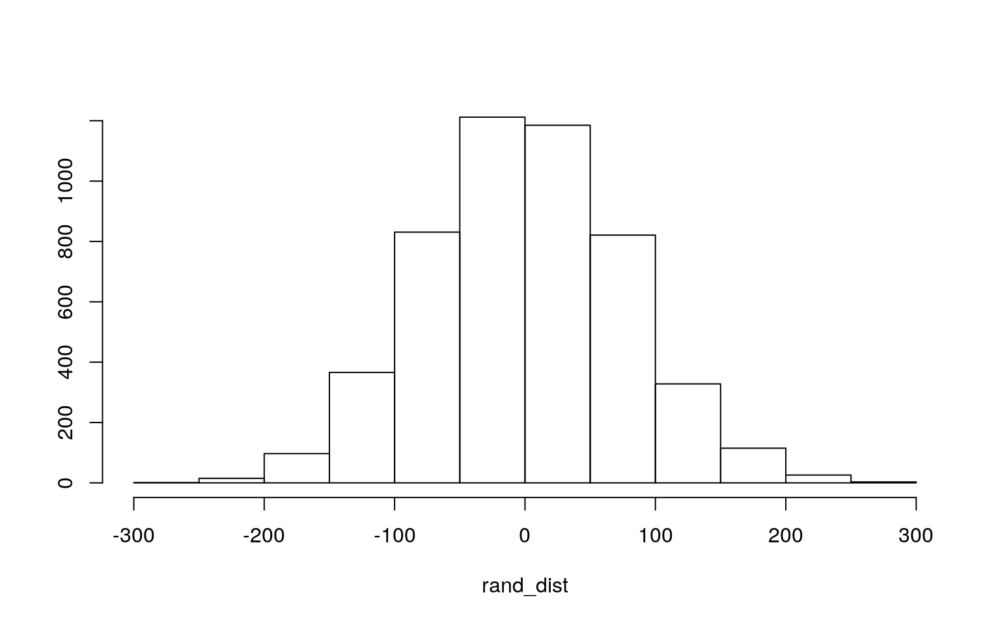
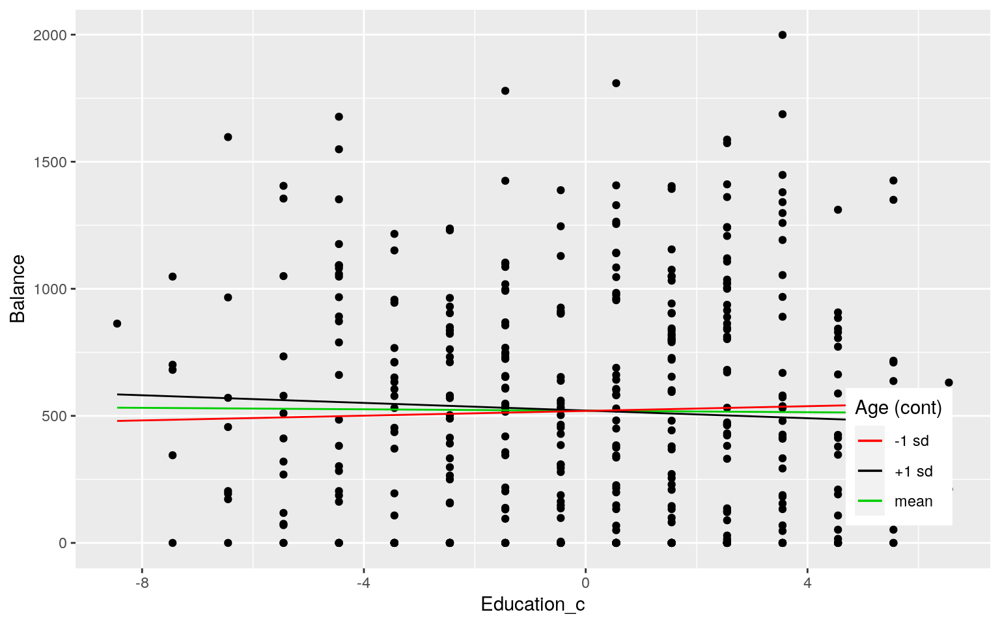
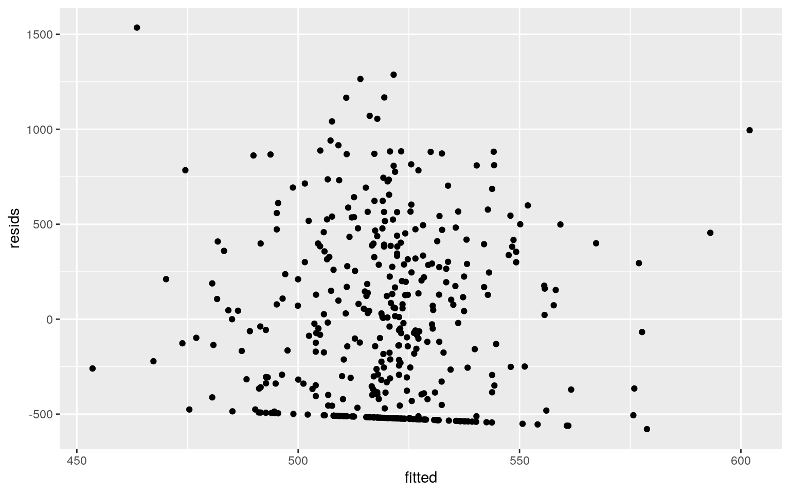
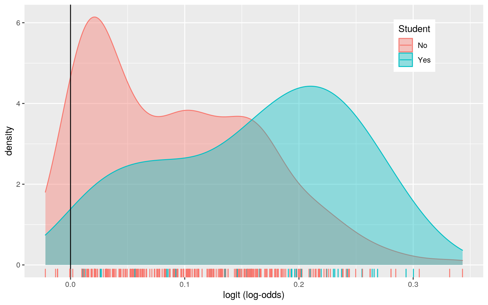
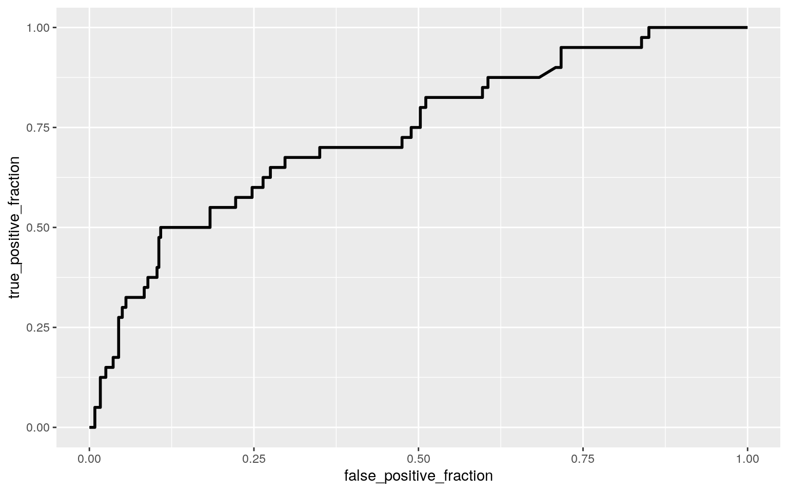

Credit <- read.csv("Credit.csv")man1 <- manova(cbind(Income, Limit, Rating, Cards, Age, Education,
Balance) ~ Student, data = Credit)
summary(man1)## Df Pillai approx F num Df den Df Pr(>F)
## Student 1 0.63389 96.959 7 392 < 2.2e-16 ***
## Residuals 398
## ---
## Signif. codes: 0 '***' 0.001 '**' 0.01 '*' 0.05 '.' 0.1
' ' 1summary.aov(man1)## Response Income :
## Df Sum Sq Mean Sq F value Pr(>F)
## Student 1 191 191.02 0.1535 0.6955
## Residuals 398 495430 1244.80
##
## Response Limit :
## Df Sum Sq Mean Sq F value Pr(>F)
## Student 1 76914 76914 0.0144 0.9045
## Residuals 398 2125708072 5340975
##
## Response Rating :
## Df Sum Sq Mean Sq F value Pr(>F)
## Student 1 39 39.3 0.0016 0.9678
## Residuals 398 9551845 23999.6
##
## Response Cards :
## Df Sum Sq Mean Sq F value Pr(>F)
## Student 1 0.51 0.51361 0.2726 0.6019
## Residuals 398 749.76 1.88383
##
## Response Age :
## Df Sum Sq Mean Sq F value Pr(>F)
## Student 1 106 105.75 0.3548 0.5517
## Residuals 398 118619 298.04
##
## Response Education :
## Df Sum Sq Mean Sq F value Pr(>F)
## Student 1 20.3 20.2500 2.0789 0.1501
## Residuals 398 3876.8 9.7406
##
## Response Balance :
## Df Sum Sq Mean Sq F value Pr(>F)
## Student 1 5658372 5658372 28.622 1.488e-07 ***
## Residuals 398 78681540 197692
## ---
## Signif. codes: 0 '***' 0.001 '**' 0.01 '*' 0.05 '.' 0.1
' ' 1pairwise.t.test(Credit$Balance, Credit$Student, p.adj = "none")##
## Pairwise comparisons using t tests with pooled SD
##
## data: Credit$Balance and Credit$Student
##
## No
## Yes 1.5e-07
##
## P value adjustment method: noneThe MANOVA test shows that at least one of the numeric variables differs by whether someone was a student or not (P-value = 2.2e-16). After running an ANOVA for all the numeric variables, the results showed that only the balance variable differed between students vs non-students. As a result, a pairwise t-test was done on the balance variable which confirmed that there was a significant difference in credit card balance for students vs non-students. There were a total of 9 tests done, including 1 MANOVA, 7 ANOVA, and 1 t-test. Therefore, the adjusted alpha should be 0.05/9=0.0056. Additionally, the probability of a Type 1 error occurring is 1-0.95^9=0.3698. For the MANOVA test there are a lot of assumptions such as random samples/independent observation, multivariate normality of dependent variables, homogeneity of within-group covariance matrices, linear relationships among dependent variables, no extreme univariate or multivariate outliers, and no multicollinearity. Because there are so many assumptions it is likely that not all of them were met
rand_dist <- vector()
for (i in 1:5000) {
new <- data.frame(balance = sample(Credit$Balance), student = Credit$Student)
rand_dist[i] <- mean(new[new$student == "Yes", ]$balance) -
mean(new[new$student == "No", ]$balance)
}
Credit %>% group_by(Student) %>% summarize(means = mean(Balance)) %>%
summarize(`mean_diff:` = diff(means))## # A tibble: 1 x 1
## `mean_diff:`
## <dbl>
## 1 396.mean(rand_dist > 396.4556 | rand_dist < -396.4556)## [1] 0hist(rand_dist, main = "", ylab = "")
abline(v = c(396.4556, -396.4556), col = "red")
The null hypothesis for this randomization test is that the mean difference in credit card balance is the same for students and non-students. The alternate hypothesis for this test is that the mean difference is not the same. After performing a randomization test, the results showed that the mean difference in credit card balance for students vs non-students was 396.4556. Additionally, the p-value for this was zero, meaning we could reject the null hypothesis and conclude that there is a significant difference in mean credit card balance between students and non-students.
# Linear Regression
fit <- lm(Balance ~ Age + Education, data = Credit)
summary(fit)##
## Call:
## lm(formula = Balance ~ Age + Education, data = Credit)
##
## Residuals:
## Min 1Q Median 3Q Max
## -529.42 -453.57 -61.98 336.97 1481.10
##
## Coefficients:
## Estimate Std. Error t value Pr(>|t|)
## (Intercept) 533.21346 126.02995 4.231 2.89e-05 ***
## Age 0.04969 1.33764 0.037 0.970
## Education -1.18696 7.38319 -0.161 0.872
## ---
## Signif. codes: 0 '***' 0.001 '**' 0.01 '*' 0.05 '.' 0.1
' ' 1
##
## Residual standard error: 460.9 on 397 degrees of freedom
## Multiple R-squared: 6.846e-05, Adjusted R-squared:
-0.004969
## F-statistic: 0.01359 on 2 and 397 DF, p-value: 0.9865Credit$Age_c <- (Credit$Age - mean(Credit$Age, na.rm = T))
Credit$Education_c <- (Credit$Education - mean(Credit$Education,
na.rm = T))
# Linear Regression with Interaction
fit2 <- lm(Balance ~ Age_c * Education_c, data = Credit)
summary(fit2)##
## Call:
## lm(formula = Balance ~ Age_c * Education_c, data =
Credit)
##
## Residuals:
## Min 1Q Median 3Q Max
## -578.79 -455.13 -58.63 335.46 1535.42
##
## Coefficients:
## Estimate Std. Error t value Pr(>|t|)
## (Intercept) 520.08378 23.05469 22.559 <2e-16 ***
## Age_c 0.03978 1.33825 0.030 0.976
## Education_c -1.43082 7.39225 -0.194 0.847
## Age_c:Education_c -0.35339 0.43134 -0.819 0.413
## ---
## Signif. codes: 0 '***' 0.001 '**' 0.01 '*' 0.05 '.' 0.1
' ' 1
##
## Residual standard error: 461.1 on 396 degrees of freedom
## Multiple R-squared: 0.00176, Adjusted R-squared:
-0.005802
## F-statistic: 0.2328 on 3 and 396 DF, p-value: 0.8735# Interaction Plot
fit2 <- lm(Balance ~ Age_c * Education_c, data = Credit)
new1 <- Credit
new1$Age_c <- mean(Credit$Age_c)
new1$mean <- predict(fit2, new1)
new1$Age_c <- mean(Credit$Age_c) + sd(Credit$Age_c)
new1$plus.sd <- predict(fit2, new1)
new1$Age_c <- mean(Credit$Age_c) - sd(Credit$Age_c)
new1$minus.sd <- predict(fit2, new1)
newint <- new1 %>% select(Balance, Education_c, mean, plus.sd,
minus.sd) %>% gather(Age, value, -Balance, -Education_c)
mycols <- c("#619CFF", "#F8766D", "#00BA38")
names(mycols) <- c("-1 sd", "mean", "+1 sd")
mycols = as.factor(mycols)
ggplot(Credit, aes(Education_c, Balance), group = mycols) + geom_point() +
geom_line(data = new1, aes(y = mean, color = "mean")) + geom_line(data = new1,
aes(y = plus.sd, color = "+1 sd")) + geom_line(data = new1,
aes(y = minus.sd, color = "-1 sd")) + scale_color_manual(values = mycols) +
labs(color = "Age (cont)") + theme(legend.position = c(0.9,
0.2))
# R-squared
summary(fit2)##
## Call:
## lm(formula = Balance ~ Age_c * Education_c, data =
Credit)
##
## Residuals:
## Min 1Q Median 3Q Max
## -578.79 -455.13 -58.63 335.46 1535.42
##
## Coefficients:
## Estimate Std. Error t value Pr(>|t|)
## (Intercept) 520.08378 23.05469 22.559 <2e-16 ***
## Age_c 0.03978 1.33825 0.030 0.976
## Education_c -1.43082 7.39225 -0.194 0.847
## Age_c:Education_c -0.35339 0.43134 -0.819 0.413
## ---
## Signif. codes: 0 '***' 0.001 '**' 0.01 '*' 0.05 '.' 0.1
' ' 1
##
## Residual standard error: 461.1 on 396 degrees of freedom
## Multiple R-squared: 0.00176, Adjusted R-squared:
-0.005802
## F-statistic: 0.2328 on 3 and 396 DF, p-value: 0.8735# Normality assumption
resids <- fit2$residuals
shapiro.test(resids)##
## Shapiro-Wilk normality test
##
## data: resids
## W = 0.92555, p-value = 3.322e-13# Linearity assumption
fitted <- lm(Balance ~ Age_c * Education_c, data = Credit)$fitted.values
ggplot() + geom_point(aes(fitted, resids))
# Homoskedasticity Assumption
library(sandwich)
library(lmtest)
bptest(fit2)##
## studentized Breusch-Pagan test
##
## data: fit2
## BP = 1.9225, df = 3, p-value = 0.5886# Robust Standard Errors
coeftest(fit2, vcov = vcovHC(fit2))[, 1:2]## Estimate Std. Error
## (Intercept) 520.08377791 23.1864650
## Age_c 0.03978218 1.4017730
## Education_c -1.43081736 7.5972451
## Age_c:Education_c -0.35338682 0.4753084I decided to run a linear regression model predicting credit card balance from age and years of education completed. This linear regression model indicated that only the intercept was significant so age and years of education completed do not explain a significant amount of variation in credit card balance. The intercept value indicates that 533.21 is the predicted credit card balance when age and years of education is zero. The coefficient estimate for age is 0.049 and is the slope for age on credit card balance while holding education constant. The coefficient estimate for education is -1.187 and is the slope for education on credit card balance while holding age constant. For the linear regression with interaction, the intercept of 520.08 is the predicted credit card balance for participants of average age and average education level of (after mean centering age and education). The model explains 0.176% of the variation in the outcome. After checking the assumptions of linearity, normality, and homoskedasticity, the normality assumption was not met but the others were met. After recomputing the regression with robust standard errors the results were nearly the same as before with only slightly higher standard errors.
fit2 <- lm(Balance ~ Age_c * Education_c, data = Credit)
resids <- fit$residuals
fitted <- fit$fitted.values
resid_resamp <- replicate(5000, {
new_resids <- sample(resids, replace = TRUE)
Credit$new_y <- fitted + new_resids
fit2 <- lm(new_y ~ Age_c * Education_c, data = Credit)
coef(fit2)
})
resid_resamp %>% t %>% as.data.frame %>% summarize_all(sd)## (Intercept) Age_c Education_c Age_c:Education_c
## 1 23.22505 1.332684 7.376031 0.4262236The bootstrapped standard errors were slightly lower than both the robust standard errors and the original standard errors.
data <- Credit %>% mutate(y = ifelse(Student == "Yes", 1, 0))
fit3 <- lm(y ~ Balance + Cards, data = data)
summary(fit3)##
## Call:
## lm(formula = y ~ Balance + Cards, data = data)
##
## Residuals:
## Min 1Q Median 3Q Max
## -0.34320 -0.14501 -0.06434 -0.01526 0.98903
##
## Coefficients:
## Estimate Std. Error t value Pr(>|t|)
## (Intercept) 4.226e-02 3.721e-02 1.136 0.257
## Balance 1.720e-04 3.175e-05 5.417 1.05e-07 ***
## Cards -1.072e-02 1.064e-02 -1.007 0.315
## ---
## Signif. codes: 0 '***' 0.001 '**' 0.01 '*' 0.05 '.' 0.1
' ' 1
##
## Residual standard error: 0.2905 on 397 degrees of
freedom
## Multiple R-squared: 0.06947, Adjusted R-squared: 0.06478
## F-statistic: 14.82 on 2 and 397 DF, p-value: 6.214e-07# Accuracy,Sensitivity,TPT,TNR,PPV,AUC
prob <- predict(fit3, type = "response")
class_diag(prob, data$y)## acc sens spec ppv auc
## 1 0.9 0 1 NaN 0.7341319# Confusion Matrix
probs <- predict(fit3, type = "response")
table(predict = as.numeric(probs > 0.5), truth = data$y) %>%
addmargins## truth
## predict 0 1 Sum
## 0 360 40 400
## Sum 360 40 400# Density Plot
data$logit <- predict(fit3, type = "response")
data %>% ggplot() + geom_density(aes(logit, color = Student,
fill = Student), alpha = 0.4) + theme(legend.position = c(0.85,
0.85)) + geom_vline(xintercept = 0) + xlab("logit (log-odds)") +
geom_rug(aes(logit, color = Student)) + geom_text(x = -5,
y = 0.07, label = "TN = 431") + geom_text(x = -1.75, y = 0.008,
label = "FN = 19") + geom_text(x = 1, y = 0.006, label = "FP = 13") +
geom_text(x = 5, y = 0.04, label = "TP = 220")
# ROC Curve
library(plotROC)
ROCplot <- ggplot(fit3) + geom_roc(aes(d = y, m = probs), n.cuts = 0)
ROCplot
calc_auc(ROCplot)## PANEL group AUC
## 1 1 -1 0.7341319I decided to run a regression that predicted if someone was a student or not from credit card balance and the number of credit cards a person has. Based on this regression, only Balance was a significant predictor. Additionally, this model shows that for every one unit increase credit card balance, the y variable goes up by 1.720e-04. Also, for every one unit increase in the number of credit cards owned, the y variable goes down by 1.072e-02. The accuracy for this model was 0.9, the sensitivity was 0, the specificity was 1, and the AUC was 0.734. Since the AUC for this model was 0.734, this falls into the category of fair, so it is not great but not terrible.
data <- Credit %>% mutate(y = ifelse(Student == "Yes", 1, 0))
fit4 <- glm(y ~ ., data = data)
summary(fit4)##
## Call:
## glm(formula = y ~ ., data = data)
##
## Deviance Residuals:
## Min 1Q Median 3Q Max
## -4.627e-17 -3.197e-17 -2.721e-17 -2.170e-17 1.110e-16
##
## Coefficients: (3 not defined because of singularities)
## Estimate Std. Error t value Pr(>|t|)
## (Intercept) 2.020e-17 2.029e-17 9.960e-01 0.3200
## X -7.917e-21 1.991e-20 -3.980e-01 0.6911
## ID NA NA NA NA
## Income 1.786e-19 2.111e-19 8.460e-01 0.3980
## Limit -3.111e-20 1.566e-20 -1.987e+00 0.0476 *
## Rating 3.929e-19 2.264e-19 1.735e+00 0.0835 .
## Cards -2.285e-18 2.032e-18 -1.125e+00 0.2614
## Age -8.665e-20 1.357e-19 -6.390e-01 0.5234
## Education 8.986e-19 7.324e-19 1.227e+00 0.2206
## GenderFemale 5.599e-18 4.578e-18 1.223e+00 0.2220
## StudentYes 1.000e+00 1.254e-17 7.977e+16 <2e-16 ***
## MarriedYes -4.200e-18 4.752e-18 -8.840e-01 0.3774
## EthnicityAsian -3.630e-19 6.479e-18 -5.600e-02 0.9554
## EthnicityCaucasian 1.822e-18 5.611e-18 3.250e-01 0.7456
## Balance 1.653e-20 2.328e-20 7.100e-01 0.4782
## Age_c NA NA NA NA
## Education_c NA NA NA NA
## ---
## Signif. codes: 0 '***' 0.001 '**' 0.01 '*' 0.05 '.' 0.1
' ' 1
##
## (Dispersion parameter for gaussian family taken to be
2.047513e-33)
##
## Null deviance: 3.6000e+01 on 399 degrees of freedom
## Residual deviance: 7.9034e-31 on 386 degrees of freedom
## AIC: -28957
##
## Number of Fisher Scoring iterations: 1prob <- predict(fit4, type = "response")
class_diag(prob, data$y)## acc sens spec ppv auc
## 1 1 1 1 1 1# 10-fold CV
k = 10
data <- data[sample(nrow(data)), ]
folds <- cut(seq(1:nrow(data)), breaks = k, labels = F)
diags <- NULL
for (i in 1:k) {
train <- data[folds != i, ]
test <- data[folds == i, ]
truth <- test$y
fit4 <- glm(y ~ ., data = data, family = binomial)
probs <- predict(fit4, newdata = test, type = "response")
diags <- rbind(diags, class_diag(probs, truth))
}
summarize_all(diags, mean)## acc sens spec ppv auc
## 1 1 1 1 1 1# LASSO
library(glmnet)
y <- as.matrix(data$y)
x <- model.matrix(y ~ ., data = data)
cv <- cv.glmnet(x, y, family = "binomial")
lasso1 <- glmnet(x, y, family = "binomial", lambda = cv$lambda.1se)
coef(lasso1)## 18 x 1 sparse Matrix of class "dgCMatrix"
## s0
## (Intercept) -8.621835
## (Intercept) .
## X .
## ID .
## Income .
## Limit .
## Rating .
## Cards .
## Age .
## Education .
## GenderFemale .
## StudentYes 15.045026
## MarriedYes .
## EthnicityAsian .
## EthnicityCaucasian .
## Balance .
## Age_c .
## Education_c .After performing a logistic regression that predicted if someone was a student or not based on all the other variables in the dataset,the in-sample classification diagnostics were an acc of 0.82, sens of 0.1 spec of 0.9. ppv of 0.1, and auc of 0.499. This auc is very low and would be considered bad. Next, I performed a 10-fold CV with the same model, and all the average out-of-sample classification diagnostics were a 1. After that I performing LASSO on the same model. The variables that were retained were the intercept and StudentYes. However, since I used the Student variable to create the binary y variable, it would not make sense to run a 10-fold CV on the lasso selected variables since it would be the same variable.